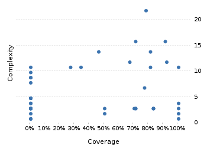

Jenkins Monitor 0.1.3
Project overview
Code coverage 51 classes, 437 / 904 elements
0.4834070848,3%
Test results 45 / 45 tests 3,07 secs
1.0100%
Code metrics
112
616
176
51
44
5
3.122
1.650
273
0,44
3,5
3,45
10,2
1,55
Class Coverage Distribution

Class Complexity

Coverage tree map
Generating Coverage Tree Map. Please wait...

Top 20 project risks
BasicAuthDaten
Zugangsdatensammler
JobAbfrage
JenkinsClient
JobBeschreibung
JobAbfragedaten
Configuration
JobStatusZeileOben
NetworkHelper
SharedListSelectionHandler
JavaSystemWrapper
ImageGenerator
Statusfenster
AbstractJobBeschreibungen
JobStatusZeileUnten
JobAbfrageFutureWrapper
JobStatus
JobStatusDarstellungen
JobStatusBeschreibungen
ContextMenu
Most complex packages
| 1. | 0.7533333375,3% |
com.github.funthomas424242.jenkinsmonitor.jenkins 111 |
| 2. | 0.144846814,5% |
com.github.funthomas424242.jenkinsmonitor.gui 85 |
| 3. | 0.8139534681,4% |
com.github.funthomas424242.jenkinsmonitor.config 52 |
| 4. | 0.292307729,2% |
com.github.funthomas424242.jenkinsmonitor.etc 22 |
| 5. | 0.00% |
com.github.funthomas424242.jenkinsmonitor 3 |
Most complex classes
| 1. | 0.716216271,6% |
JobAbfrage 26 |
| 2. | 0.905405490,5% |
Configuration 19 |
| 3. | 0.9107142791,1% |
Zugangsdatensammler 16 |
| 4. | 0.452830245,3% |
ImageGenerator 14 |
| 5. | 0.8285714482,9% |
JobAbfragedaten 13 |